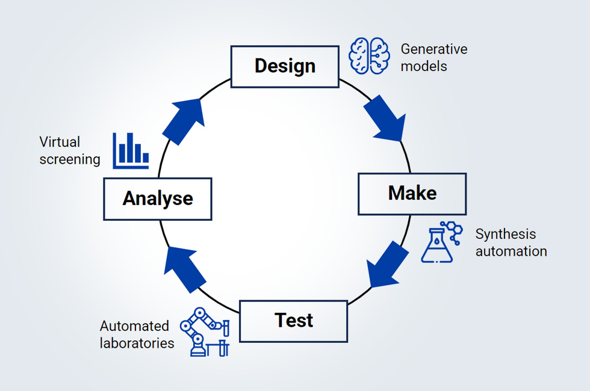

Structural input
X-ray, NMR, cryo-EM, and public fragment data provide the starting points for target-aware design.
Target-based drug design
FragmentScreen connects fragment-based screening with AI-supported fragment-to-lead optimisation. This repository is the open computational side: train target-specific screeners, generate and decorate molecular scaffolds, evaluate properties, and plan synthesis routes.

FragmentScreen develops instrumentation, workflows, and experimental and computational methods for fragment-based drug discovery. Work package 6 focuses on AI-supported fragment-to-lead optimisation, bridging structural biology, medicinal chemistry, and generative AI.
X-ray, NMR, cryo-EM, and public fragment data provide the starting points for target-aware design.
Chemical language models combine motifs, grow scaffolds, and use Regression Transformer models to decorate promising analogues.
Designed molecules move through synthesis planning, experimental validation, and model refinement in a design-make-test-analyse cycle.
The FragmentScreen WP6 blog describes the FFUL and IBM Research work on AI-supported design for SARS-CoV-2 targets, including motif-guided generation, Regression Transformer optimisation, RXN-assisted synthesis planning, and wet-lab validation.